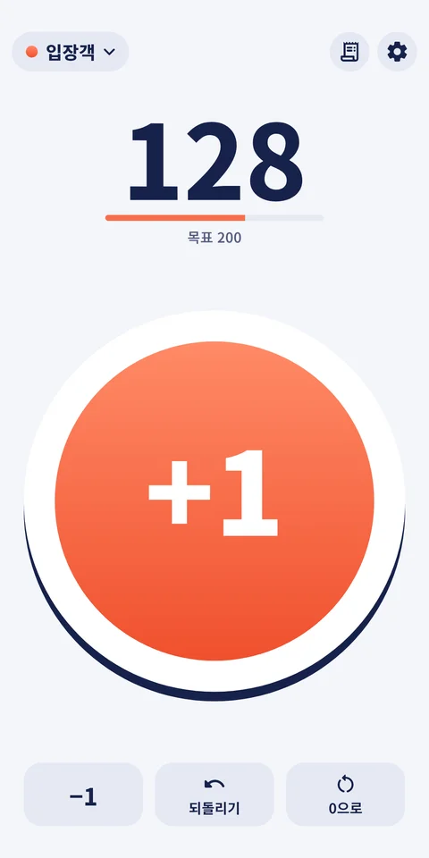
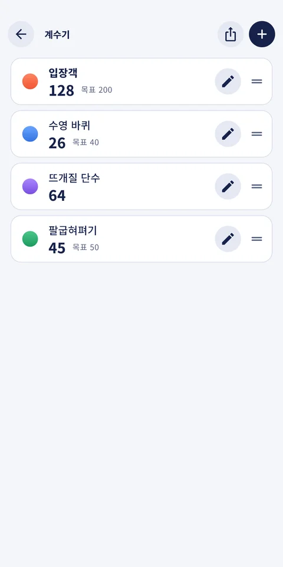
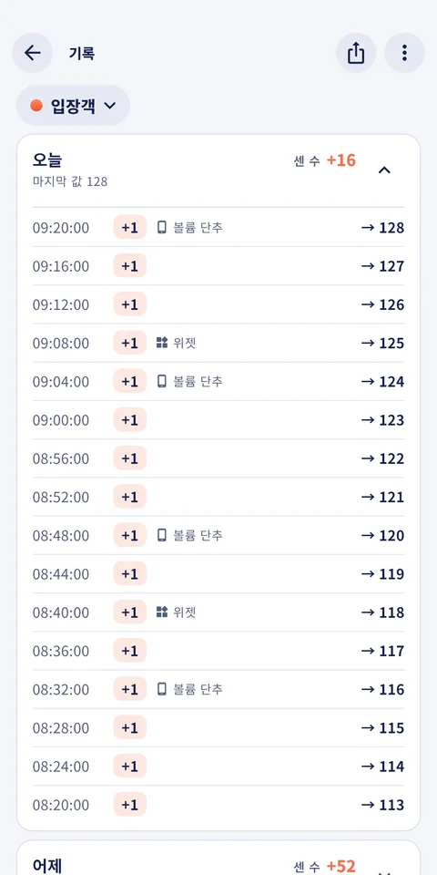
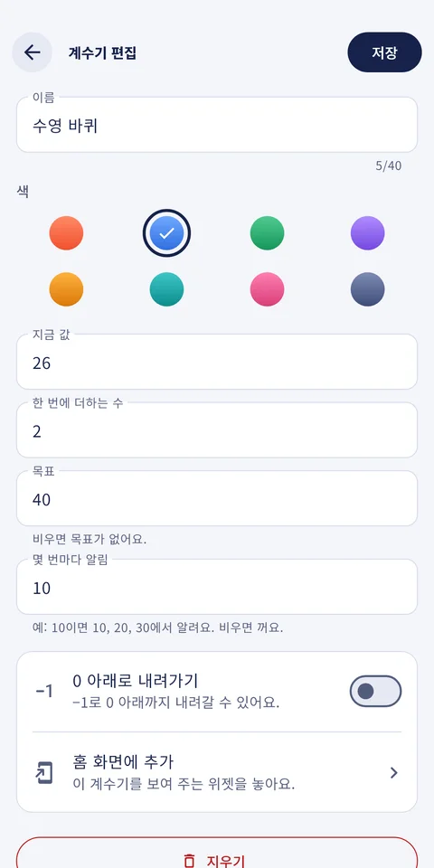
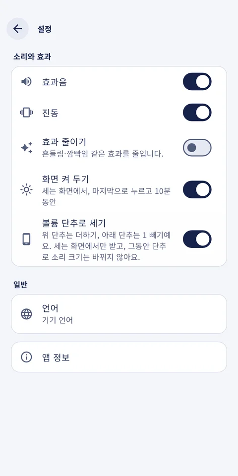
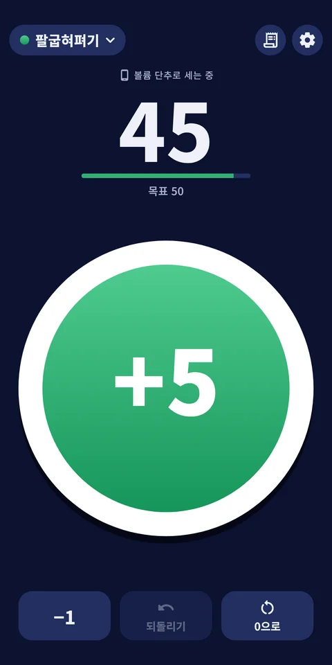
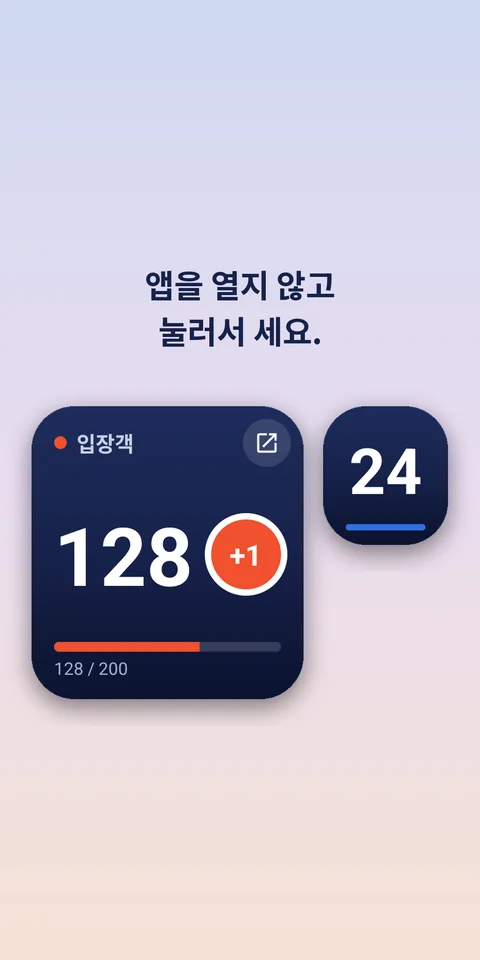

스크린샷







앱 정보
| 앱 이름 | TapAlot |
|---|---|
| 버전 | 1.0.0 |
| 개발 | Willee Project |
| 지원 플랫폼 | Android |
누를 때마다 숫자가 하나씩 오르는 계수기 앱입니다. 입장객, 재고, 운동 횟수, 뜨개질 단수처럼 '몇 번'을 세어야 할 때 씁니다.
- 회원가입도, 로그인도 없습니다. 만든 계수기와 기록은 기기 안에 저장됩니다.
- 인터넷 없이도 쓸 수 있습니다. 인터넷은 화면 아래 광고와 이용 통계·오류 보고를 보낼 때만 씁니다.
- 언어는 기기 설정을 따릅니다. 한국어·영어·일본어·중국어(간체·번체)를 지원하고, 설정에서 직접 고를 수도 있습니다.
- 값이 바뀔 때마다 바로 기기에 저장됩니다(9장).
1. 시작하기
- 앱을 켜면 마지막에 쓴 계수기의 세는 화면이 바로 열립니다. 처음에는 계수기 1이 열립니다.
- 위 막대의 계수기 이름을 누르면 계수기 목록으로 갑니다. 새 계수기는 거기서 만듭니다(3장).
- 위 막대에는 계수기 이름 말고도 기록(5장·6장)과 설정(8장) 단추가 있습니다.
2. 세기
세는 화면 가운데에 지금 값이 크게 보이고, 그 아래에 큰 +1 단추가 있습니다. 단추 아래에는 1 빼기, 되돌리기, 0으로가 있습니다.
- +1 단추: 손가락이 닿는 순간 셉니다. 떼기를 기다리지 않으므로 빠르게 이어 눌러도 됩니다. 단추의 둥근 원 안만 반응하고, 원 밖은 눌러도 세지 않습니다.
- 1 빼기: 값을 1 줄입니다. 기본으로는 0 아래로 내려가지 않습니다(4장의 0 아래로 내려가기).
- 되돌리기: 마지막 변화(더하기, 빼기, 0으로, 값 고침)를 취소합니다. 이어서 누르면 그 앞의 변화도 차례로 되돌립니다.
- 0으로: 값을 0으로 돌립니다. 먼저 '0으로 되돌릴까요?'라는 확인 창이 뜹니다. 지금 값은 기록에 남고, 되돌리기로 다시 살릴 수 있습니다.
- 값이 바뀌면 숫자가 톡 튑니다. 설정의 효과 줄이기를 켜거나, 기기의 접근성 설정에서 애니메이션을 끄면 튀지 않습니다.
- 단추와 광고 사이의 좁은 띠는 눌러도 반응하지 않습니다.
3. 계수기 목록
위 막대의 계수기 이름을 누르면 열립니다. 계수기는 여러 개 만들 수 있습니다.
- 계수기를 누르면 그 계수기의 세는 화면이 열립니다.
- 위의 새 계수기 단추로 만듭니다.
- 줄 끝의 계수기 편집 단추로 고칩니다(4장).
- 끌어서 차례 바꾸기: 줄의 손잡이를 끌거나 줄을 길게 눌러 끕니다.
- 지우기는 편집 화면에 있습니다. 지우면 '계수기를 지웠어요'와 되돌리기가 잠시 나옵니다. 지운 계수기는 목록 맨 아래 지운 계수기에 7일 동안 남고('N일 뒤 비워요'), 그 안에서 되살리기를 누르면 기록과 함께 돌아옵니다. 7일이 지나면 기록과 함께 비워집니다.
- 계수기가 하나만 남으면 지우기 단추가 없습니다. 계수기는 늘 하나 이상 있습니다.
- 위의 모두 내보내기(CSV) 단추는 모든 계수기의 기록을 파일로 보냅니다(6장).
4. 계수기 편집
| 항목 | 하는 일 |
|---|---|
| 이름 | 계수기의 이름입니다(40자까지). 비우면 '계수기 1'처럼 번호가 붙은 이름이 보입니다 |
| 색 | 8가지 색 가운데 고릅니다. 세는 화면과 위젯에 쓰입니다 |
| 시작 값 | 새 계수기를 만들 때만 있습니다. 처음 값입니다 |
| 지금 값 | 이미 있는 계수기를 편집할 때 나옵니다. 값을 고치면 '값 고침'이 기록에 남고, 되돌리기로 되돌릴 수 있습니다 |
| 한 번에 더하는 수 | +1 단추를 한 번 누를 때 더하는 수입니다(1~9999). 기본은 1입니다 |
| 목표 | 비우면 목표가 없습니다(5장) |
| 몇 번마다 알림 | 예: 10이면 10, 20, 30에서 소리와 진동으로 알립니다. 비우면 끕니다. 한 번에 더하는 수가 커서 배수를 건너뛰어도 알립니다. 빼기와 0으로는 알리지 않습니다 |
| 0 아래로 내려가기 | 켜면 1 빼기로 0 아래까지 내려갈 수 있습니다. 기본은 끔입니다 |
- 저장을 눌러야 바뀝니다.
- 홈 화면에 추가: 이 계수기를 보여 주는 위젯을 놓습니다(7장).
- 지우기: 이 계수기를 지웁니다(3장).
5. 목표와 기록 화면
목표
- 목표를 정하면 지금 값 아래에 진행 막대와 '목표 50'이 보입니다.
- 값이 목표에 닿으면 '목표 달성'으로 바뀌고, 소리와 진동으로 알립니다. 소리·진동은 설정의 것을 따릅니다(8장).
기록
위 막대의 기록 단추로 엽니다. 값이 바뀔 때마다 한 줄씩 남은 기록을 보여 줍니다.
- 처음에는 세는 화면의 계수기 기록이 보입니다. 위의 계수기 이름 단추를 누르면 다른 계수기를 골라 그 기록을 봅니다. 세는 화면의 계수기는 바뀌지 않습니다.
- 기록은 그때의 현지 날짜로 묶입니다. 날짜 줄에는 센 수('센 수 +16': 그날 더한 수에서 뺀 수를 뺀 것, 0으로와 값 고침은 넣지 않음), 마지막 값('마지막 값 120': 그날의 마지막 값), 0으로 횟수('0으로 2번')가 보입니다.
- 날짜를 누르면 펼쳐져 그날의 줄이 새것부터 나옵니다. 줄마다 시각, 바뀜(더함·뺌·0으로·값 고침), 바뀐 수, 값이 있고, 볼륨 단추나 위젯으로 센 줄에는 그 표시가 붙습니다. 하루에 줄이 아주 많으면 최근 500줄만 보입니다(내보내기에는 모두 들어갑니다).
- 기록이 20만 줄을 넘으면 오래된 날부터 날짜 합계만 남깁니다. 그런 날은 펼쳐도 줄이 없고, 끝에 '오래된 기록은 날짜별 합계로 줄였어요.'가 보입니다. 오늘 줄은 줄이지 않습니다.
- 오른쪽 위 메뉴의 기록 지우기는 이 계수기의 기록을 모두 지웁니다. 지금 값은 그대로입니다.
6. 내보내기(CSV)
기록을 CSV 파일로 만들어 내보냅니다. 단추를 누르면 공유와 기기에 저장 가운데 고릅니다.
- 공유: 기기의 공유 창으로 보냅니다. 받을 앱(메일, 클라우드 저장 공간 등)은 이용자가 고릅니다.
- 기기에 저장: 파일 저장 창에서 폴더와 이름을 골라 이 기기에 저장합니다. 저장하면 '기기에 저장했어요.'가 보입니다.
- 한 계수기: 기록 화면 오른쪽 위의 내보내기(CSV) 단추를 누릅니다. 기록 화면에서 보고 있는 계수기의 기록입니다.
- 모든 계수기: 계수기 목록의 모두 내보내기(CSV) 단추를 누릅니다.
- 파일을 만드는 동안 'CSV 파일을 만드는 중이에요…'가 보입니다. 만들지 못하면 '파일을 만들지 못했어요. 다시 해 주세요.'가 나옵니다.
- 열은 계수기, 날짜, 시각, 바뀜, 바뀐 수, 값, 어디서입니다. 날짜 합계로 줄인 날은 날짜 합계 줄 하나로 들어갑니다.
- 표 계산 프로그램에서 열립니다.
- 파일에는 계수기 이름과 기록이 들어갑니다. 개발자에게는 보내지 않지만, 받는 사람은 읽을 수 있으니 보내기 전에 확인해 주세요.
7. 홈 화면 위젯
홈 화면에서 앱을 열지 않고 눌러서 셉니다.
놓기
- 앱에서: 계수기 편집 화면의 홈 화면에 추가를 누릅니다. 그 계수기를 보여 주는 위젯이 놓입니다. 기기가 앱에서 놓기를 지원하지 않으면 '위젯 놓기' 안내가 나옵니다. 그 계수기를 열어 둘 테니, 홈 화면 빈 곳을 길게 누르고 '위젯'에서 TapAlot을 끌어다 놓으면 됩니다.
- 홈 화면에서: 빈 곳을 길게 누르고 위젯 목록에서 TapAlot의 계수기를 끌어다 놓습니다. 이렇게 놓은 위젯은 마지막에 쓴 계수기를 보여 줍니다.
쓰기
- 위젯을 누르면 앱을 열지 않고 한 번에 더하는 수만큼 오르고 짧게 진동합니다. 진동은 앱의 진동 설정을 따릅니다. 소리는 나지 않습니다.
- 목표가 있으면 위젯에도 진행이 보입니다.
- 오른쪽 위의 작은 아이콘(앱 열기)을 누르면 앱이 열립니다.
- 위젯 크기를 줄이면 숫자만 보입니다.
- 위젯으로 센 것은 앱을 켜거나 앞으로 가져올 때 기록에 더해지고, 기록에는 '위젯'으로 남습니다. 잘못 누른 것은 앱의 되돌리기로 되돌립니다.
- 계수기를 지우면 그 위젯에는 '눌러서 앱 열기'가 보이고, 누르면 앱이 열립니다.
8. 설정
세는 화면 위 막대의 설정 단추로 엽니다. 묶음은 둘입니다.
소리와 효과
| 항목 | 하는 일 |
|---|---|
| 효과음 | 누를 때와 목표 소리를 켜고 끕니다 |
| 진동 | 누를 때와 목표 진동을 켜고 끕니다. 위젯의 진동도 이 설정을 따릅니다 |
| 효과 줄이기 | 숫자가 튀는 것 같은 효과를 줄입니다 |
| 화면 켜 두기 | 세는 화면에서 화면이 꺼지지 않게 합니다. 마지막으로 누르고 10분이 지나면 풉니다. 기본은 켬입니다 |
| 볼륨 단추로 세기 | 켜면 위 볼륨 단추는 더하기, 아래 볼륨 단추는 1 빼기입니다. 세는 화면에서만 받고, 그동안 단추로 소리 크기는 바뀌지 않습니다. 화면이 꺼진 채로는 세지 않습니다. 기본은 끔입니다 |
볼륨 단추로 센 줄은 기록에 '볼륨 단추'로 남습니다.
일반
| 항목 | 하는 일 |
|---|---|
| 언어 | 기기 언어(기본)를 따르거나 목록에서 고릅니다(English · 日本語 · 한국어 · 简体中文 · 繁體中文) |
| 개인정보 보호 옵션 | 광고 동의 창을 다시 엽니다. 동의가 필요한 지역(유럽 등)에서만 보입니다 |
| 앱 정보 | 버전, 이 설명서(사용법), 스토어에서 평가하기, 개인정보처리방침, 오픈소스 라이선스, 다른 앱(누르면 스토어가 열립니다)과 모든 앱 보기 |
화면 색은 기기의 어두운 모드를 따릅니다. 앱 안에 따로 스위치는 없습니다.
9. 저장, 백업, 광고
- 저장: 값이 바뀔 때마다 바로 기기에 저장합니다. 앱을 닫거나 강제로 끝내도 센 값이 남습니다. 하루에 한 번, 자동 백업에 들지 않는 곳에 저장 파일의 사본을 하나 두어, 파일이 망가졌을 때 되살리는 데 씁니다.
- 백업: 구글 백업(안드로이드 자동 백업)이 켜져 있으면 계수기·기록·설정이 함께 백업되어, 기기를 바꾸거나 앱을 다시 설치할 때 돌아옵니다. 원하지 않으면 안드로이드 설정의 백업 메뉴에서 끌 수 있습니다. 앱을 지우면 기기의 데이터도 지워집니다.
- 광고: 화면 맨 아래에 배너 광고가 하나 있습니다. 이것이 유일한 광고이고, 세는 화면의 큰 단추와 배너 사이에는 여유 띠가 있습니다. 키보드가 뜨면 광고 띠는 가려집니다. 동의가 필요한 지역(유럽 등)에서는 처음 켤 때 광고 동의 창이 나타나고, 나중에 설정의 개인정보 보호 옵션에서 바꿀 수 있습니다.
- 앱 안 결제는 없습니다. 서버로 보내는 것도 없습니다.
- 자세한 내용은 개인정보처리방침을 보세요.